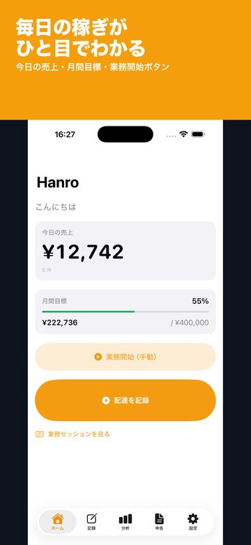
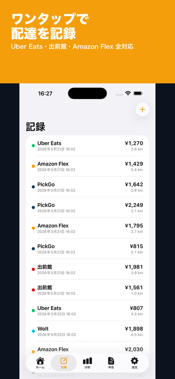
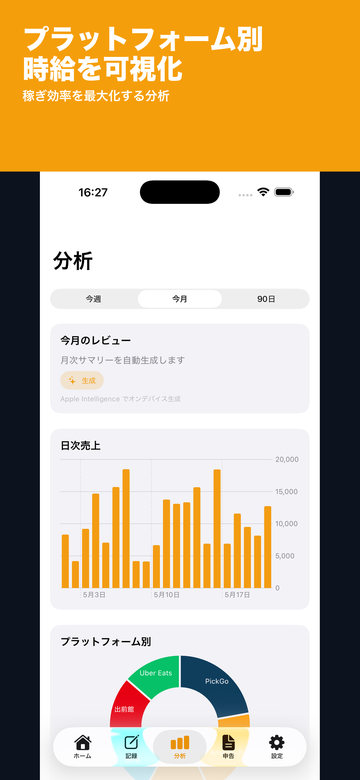

アプリ概要
| 対応OS | iOS 17.0 以降 |
|---|---|
| 価格 | 無料（アプリ内課金あり） |
| バージョン | 1.0 |
| サイズ | 約 2 MB |
| カテゴリ | ビジネス |
| 対象年齢 | 4+ |
| 対象ユーザー | フードデリバリー・軽貨物ドライバー |
| データの扱い | 完全オフライン（任意でiCloud同期） |
| 開発者 | freetokyo |
| 最終更新 | 2026-05-31 |
使い方（3ステップ）
- 売上・経費を記録する
- 自動マイレージで距離を記録
- 確定申告用CSVを出力する
アプリの画面



配達ドライバーの収支管理ができる主な機能
マルチプラットフォーム対応
Uber Eats / 出前館 / Wolt / menu / Amazon Flex / ピックゴー など、複数の配達サービスをまたいだ売上を一元管理。
自動マイレージ記録
Core Motion + Core Location + 車両 Bluetooth で運転を自動検知し、業務 km と私用 km を自動振り分け。
AI 稼ぎ時予測
Apple Intelligence による曜日 × 時間帯 × 天気の最適化。月次レビューで次月の重点曜日を提案。
確定申告データ出力
freee / マネーフォワード / 弥生会計 の CSV フォーマットに対応。家事按分も自動計算。
レシート OCR
レシートを撮影 → VisionKit + Foundation Models が自動仕分け。科目別の月次レポートを PDF 出力。
完全オフライン動作
すべての処理を端末内で完結。データの外部送信なし。iCloud Private DB で複数端末同期も可能（任意）。
Apple Watch 対応
手元のワンタップで配達を記録。大型ボタンで運転中も安心。
ウィジェット & ライブアクティビティ
今日の売上・月間目標進捗をホーム画面に表示。稼働中のセッションをロック画面に表示。
サブスクリプション
プレミアム 月額
¥490 / 月
全機能無制限・30 日無料体験
プレミアム 年額
¥4,900 / 年
月額より 2 ヶ月分お得
購入後、Apple ID 設定からいつでもキャンセル可能です。無料体験期間中の解約で課金は発生しません。
動作環境
- iOS 17.0 以降の iPhone / iPad
- watchOS 10.0 以降の Apple Watch（任意）
- Apple Intelligence: A17 Pro 以降の iPhone（AI 予測機能）
お問い合わせ
不具合報告・機能要望・購入に関するご質問は freetokyo2020@yahoo.co.jp までお願いします。